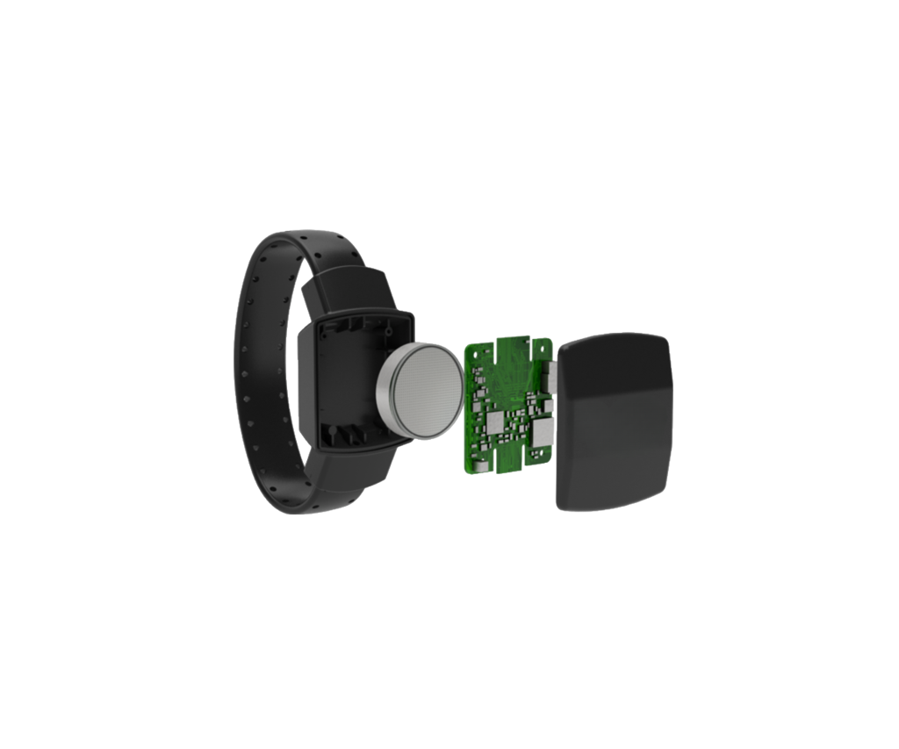

E-Bracelets — это современная система электронного мониторинга для круглосуточного отслеживания лиц под надзором, предоставляющая альтернативу тюремному заключению через технологии геолокации и биометрического контроля. Встроенные оптические и емкостные датчики обнаруживают попытки снятия браслета, а биометрический сенсор измеряет пульс и температуру тела для подтверждения присутствия носителя. Стандартная RF-версия работает через радиочастотную связь с базовой станцией, автономная GPS/GSM-версия обеспечивает непрерывное отслеживание через сотовую связь с керамической антенной для надежного приема даже в помещениях. Система создает геозоны с автоматическими уведомлениями о нарушениях границ. Центральный веб-интерфейс отображает текущее местоположение, историю перемещений и статус устройств на интерактивных картах в реальном времени. Защита от несанкционированного снятия включает сверхпрочный ремешок, специальный замок, датчики вскрытия корпуса и оптические сенсоры контакта с кожей. Все данные шифруются, устройства защищены цифровыми сертификатами, а система интегрируется с базами данных правоохранительных, пенитенциарных и судебных органов.
E-Bracelets снижает затраты на содержание под стражей и в тюрьмах до 80%, позволяя подконтрольным лицам продолжать трудовую деятельность, поддерживать семью и сохранять социальную адаптацию. Альтернативные меры наказания разгружают судебную систему, снижают стигматизацию правонарушителей и уровень рецидивов при постоянном контроле территориальных ограничений, комендантского часа и медицинских показателей. Система мгновенно отправляет уведомления о нарушениях через SMS, email и push-уведомления мобильного приложения. Автоматическая диагностика контролирует техническое состояние браслетов, уровень заряда и качество связи, предиктивное обслуживание предотвращает сбои, а централизованная платформа управляет заменой устройств по графику. Полное соответствие законодательству о персональных данных и международным стандартам прав человека делает E-Bracelets современным и гуманным решением для электронного мониторинга с эффективным контролем и экономией ресурсов.
